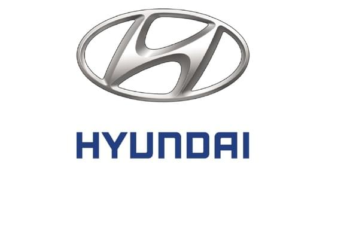

Riparazione auto
Genser Auto Service offre servizi di riparazione e manutenzione auto di qualità.
IscriversiChi siamo
Il gruppo di società Genser è stato fondato il 20 maggio 1991 ed è ampiamente conosciuto a Mosca e nelle regioni della Russia.
Gli specialisti di Genser non hanno solo un'esperienza unica nella manutenzione delle auto. Nel corso degli anni di lavoro nel mercato russo, il gruppo di società ha creato una base di servizi unica con un enorme potenziale di sviluppo. Il personale dell'azienda deve seguire una formazione professionale presso i centri di formazione delle aziende produttrici. L'attrezzatura tecnica di tutti i centri dell'azienda è pienamente conforme agli elevati standard dei produttori.
Tradizionalmente, il gruppo presta particolare attenzione alla qualità del servizio. Genser dispone di un apposito Servizio Controllo Qualità, le cui responsabilità includono il monitoraggio costante della soddisfazione del cliente per l'operato dell'azienda, l'identificazione e l'eliminazione di possibili problemi. Di conseguenza, la qualità del lavoro di tutti i centri Genser è mantenuta ad un livello elevato ed è regolarmente riconosciuta da esperti indipendenti e premi del produttore.
La vasta esperienza di lavoro con clienti aziendali consente a Genser di sviluppare programmi speciali per aziende che offrono vari sconti per la manutenzione del parco auto.

Ripara appena in tempo
Apprezziamo il tuo tempo e quindi parliamo sempre dei termini di riparazione o manutenzione della tua auto nel nostro centro auto. In caso di lavoro aggiuntivo, ti avviseremo sicuramente dei cambiamenti nel tempo in cui l'auto è pronta.
Personale qualificato
Prestiamo particolare attenzione ai dipendenti che si prendono cura della tua auto. A tal fine, miglioriamo costantemente le loro conoscenze e competenze. Tutti i centri auto impiegano personale certificato e formato dalla casa costruttrice, in grado di individuare rapidamente il malfunzionamento ed effettuare le necessarie riparazioni.

Prezzi accessibili
Ottimizziamo costantemente i nostri costi per offrirti prezzi accessibili per le riparazioni auto con elevati standard di servizio.

Garanzia di lavoro
Per tutti i tipi di lavoro e pezzi di ricambio acquistati da noi, forniamo una garanzia fino a 24 mesi.
Gamma completa di servizi
Lavoriamo nel formato "one stop shop", se ci dai la tua auto per il servizio, faremo tutti i tipi di lavoro necessario in modo che sia in buone condizioni. Selezioneremo e installeremo tutti i pezzi di ricambio e gli accessori. attrezzatura. Ci assumeremo la responsabilità della manutenzione della tua auto e ti aiuteremo in qualsiasi situazione.
Attrezzature moderne e strumenti speciali
Nel nostro lavoro utilizziamo le attrezzature più moderne e le aggiorniamo costantemente. La nostra attrezzatura è testata e calibrata. La presenza di una vasta gamma di strumenti speciali per diverse marche ci consente di eseguire il lavoro più difficile di riparazione della tua auto.

Comoda area clienti
Soprattutto per te, abbiamo organizzato un'accogliente area clienti con Wi-Fi gratuito, in modo che tu possa rilassarti comodamente e divertirti mentre aspetti la tua auto.
Standard di servizio
Comodo orario di lavoro dalle 9 alle 21 sette giorni su sette. Pre-registrazione per riparazioni. Ricevitore principale personale. Un pacchetto completo di documenti per l'accettazione e la riparazione di un'auto con la conservazione della storia della manutenzione dell'auto. Autolavaggio gratuito prima di entrare nell'area di riparazione. Controllo di qualità del lavoro svolto. Selezione, ordinazione e consegna dei pezzi di ricambio Pagamento al termine del lavoro in contanti, con carta, pagamento senza contatto, pagamento anticipato in base alla fattura.
Serviamo
- 

Riparazione del corpo
Riparazione del sistema di scarico
Riparazione del motore
Riparazione sospensioni
Riparazione dello sterzo
Riparazione del sistema frenante
Riparazione della trasmissione
Riparazione di marcia
Contatti
Amici, venite da noi, saremo felici!
Via Alessandria, 220, 00198 Roma RM, ItaliaAmici, chiamateci, saremo felici!
+385822384